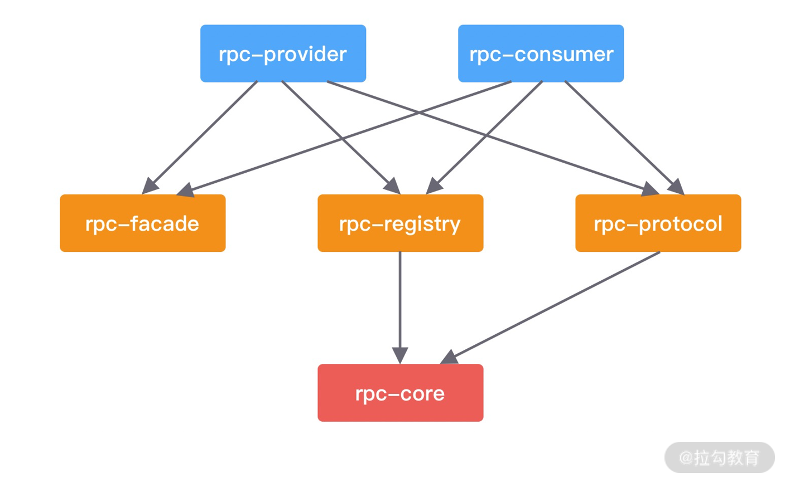

- 00 学好 Netty，是你修炼 Java 内功的必经之路.md.html
- 01 初识 Netty：为什么 Netty 这么流行？.md.html
- 02 纵览全局：把握 Netty 整体架构脉络.md.html
- 03 引导器作用：客户端和服务端启动都要做些什么？.md.html
- 04 事件调度层：为什么 EventLoop 是 Netty 的精髓？.md.html
- 05 服务编排层：Pipeline 如何协调各类 Handler ？.md.html
- 06 粘包拆包问题：如何获取一个完整的网络包？.md.html
- 07 接头暗语：如何利用 Netty 实现自定义协议通信？.md.html
- 08 开箱即用：Netty 支持哪些常用的解码器？.md.html
- 09 数据传输：writeAndFlush 处理流程剖析.md.html
- 10 双刃剑：合理管理 Netty 堆外内存.md.html
- 11 另起炉灶：Netty 数据传输载体 ByteBuf 详解.md.html
- 12 他山之石：高性能内存分配器 jemalloc 基本原理.md.html
- 13 举一反三：Netty 高性能内存管理设计（上）.md.html
- 14 举一反三：Netty 高性能内存管理设计（下）.md.html
- 15 轻量级对象回收站：Recycler 对象池技术解析.md.html
- 16 IO 加速：与众不同的 Netty 零拷贝技术.md.html
- 17 源码篇：从 Linux 出发深入剖析服务端启动流程.md.html
- 18 源码篇：解密 Netty Reactor 线程模型.md.html
- 19 源码篇：一个网络请求在 Netty 中的旅程.md.html
- 20 技巧篇：Netty 的 FastThreadLocal 究竟比 ThreadLocal 快在哪儿？.md.html
- 21 技巧篇：延迟任务处理神器之时间轮 HashedWheelTimer.md.html
- 22 技巧篇：高性能无锁队列 Mpsc Queue.md.html
- 23 架构设计：如何实现一个高性能分布式 RPC 框架.md.html
- 24 服务发布与订阅：搭建生产者和消费者的基础框架.md.html
- 25 远程通信：通信协议设计以及编解码的实现.md.html
- 26 服务治理：服务发现与负载均衡机制的实现.md.html
- 27 动态代理：为用户屏蔽 RPC 调用的底层细节.md.html
- 28 实战总结：RPC 实战总结与进阶延伸.md.html
- 29 编程思想：Netty 中应用了哪些设计模式？.md.html
- 30 实践总结：Netty 在项目开发中的一些最佳实践.md.html
- 31 结束语 技术成长之路：如何打造自己的技术体系.md.html
- 捐赠
24 服务发布与订阅：搭建生产者和消费者的基础框架
从本节课开始，我们开始动手开发一个完整的 RPC 框架原型，通过整个实践课程的学习，你不仅可以熟悉 RPC 的实现原理，而且可以对之前 Netty 基础知识加深理解，同样在工作中也可以学以致用。
我会从服务发布与订阅、远程通信、服务治理、动态代理四个方面详细地介绍一个通用 RPC 框架的实现过程，相信你只要坚持完成本次实践课，之后你再独立完成工作中项目研发会变得更加容易。你是不是已经迫不及待地想动手了呢？让我们一起开始吧！
源码参考地址：mini-rpc
环境搭建
工欲善其事必先利其器，首先我们需要搭建我们的开发环境，这是每个程序员的必备技能。以下是我的本机环境清单，仅供参考。
- 操作系统：MacOS Big Sur，11.0.1。
- 集成开发工具：IntelliJ IDEA 2020.3，当然你也可以选择 eclipse。
- 项目技术栈：SpringBoot 2.1.12.RELEASE + JDK 1.8.0_221 + Netty 4.1.42.Final。
- 项目依赖管理工具：Maven 3.5.4，你可以独立安装 Maven 或者使用 IDEA 的集成版，独立安装的 Maven 需要配置 MAVEN_HOME 和 PATH 环境变量。
- 注册中心：Zookeeeper 3.4.14，需要特别注意 Zookeeeper 和 Apache Curator 一定要搭配使用，Zookeeper 3.4.x 版本，Apache Curator 只有 2.x.x 才能支持。
项目结构
在动手开发项目之前，我们需要对项目结构有清晰的构思。根据上节课介绍的 RPC 框架设计架构，我们可以将项目结构划分为以下几个模块。

其中每个模块都是什么角色呢？下面我们一一进行介绍。
- rpc-provider，服务提供者。负责发布 RPC 服务，接收和处理 RPC 请求。
- rpc-consumer，服务消费者。使用动态代理发起 RPC 远程调用，帮助使用者来屏蔽底层网络通信的细节。
- rpc-registry，注册中心模块。提供服务注册、服务发现、负载均衡的基本功能。
- rpc-protocol，网络通信模块。包含 RPC 协议的编解码器、序列化和反序列化工具等。
- rpc-core，基础类库。提供通用的工具类以及模型定义，例如 RPC 请求和响应类、RPC 服务元数据类等。
- rpc-facade，RPC 服务接口。包含服务提供者需要对外暴露的接口，本模块主要用于模拟真实 RPC 调用的测试。
如下图所示，首先我们需要清楚各个模块之间的依赖关系，才能帮助我们更好地梳理 Maven 的 pom 定义。rpc-core 是最基础的类库，所以大部分模块都依赖它。rpc-consumer 用于发起 RPC 调用。rpc-provider 负责处理 RPC 请求，如果不知道远程服务的地址，那么一切都是空谈了，所以两者都需要依赖 rpc-registry 提供的服务发现和服务注册的能力。

如何使用
我们不着急开始动手实现代码细节，而是考虑一个问题，最终实现的 RPC 框架应该让用户如何使用呢？这就跟我们学习一门技术一样，你不可能刚开始就直接陷入源码的细节，而是先熟悉它的基本使用方式，然后找到关键的切入点再深入研究实现原理，会起到事半功倍的效果。
首先我们看下 RPC 框架想要实现的效果，如下所示：
// rpc-facade # HelloFacade
public interface HelloFacade {
String hello(String name);
}
// rpc-provider # HelloFacadeImpl
@RpcService(serviceInterface = HelloFacade.class, serviceVersion = "1.0.0")
public class HelloFacadeImpl implements HelloFacade {
@Override
public String hello(String name) {
return "hello" + name;
}
}
// rpc-consumer # HelloController
@RestController
public class HelloController {
@RpcReference(serviceVersion = "1.0.0", timeout = 3000)
private HelloFacade helloFacade;
@RequestMapping(value = "/hello", method = RequestMethod.GET)
public String sayHello() {
return helloFacade.hello("mini rpc");
}
}
为了方便在本地模拟客户端和服务端，我会把 rpc-provider 和 rpc-consumer 两个模块能够做到独立启动。rpc-provider 通过 @RpcService 注解暴露 RPC 服务 HelloFacade，rpc-consumer 通过 @RpcReference 注解引用 HelloFacade 服务并发起调用，基本与我们常用的 RPC 框架使用方式保持一致。
梳理清楚项目结构和整体实现思路之后，下面我们从服务提供者开始入手开发。
服务提供者发布服务
服务提供者 rpc-provider 需要完成哪些事情呢？主要分为四个核心流程：
- 服务提供者启动服务，并暴露服务端口；
- 启动时扫描需要对外发布的服务，并将服务元数据信息发布到注册中心；
- 接收 RPC 请求，解码后得到请求消息；
- 提交请求至自定义线程池进行处理，并将处理结果写回客户端。
本节课我们先实现 rpc-provider 模块前面两个流程。
服务提供者启动
服务提供者启动的配置方式基本是固定模式，也是从引导器 Bootstrap 开始入手，你可以复习下基础课程《03 引导器作用：客户端和服务端启动都要做些什么？》。我们首先看下服务提供者的启动实现，代码如下所示：
private void startRpcServer() throws Exception {
this.serverAddress = InetAddress.getLocalHost().getHostAddress();
EventLoopGroup boss = new NioEventLoopGroup();
EventLoopGroup worker = new NioEventLoopGroup();
try {
ServerBootstrap bootstrap = new ServerBootstrap();
bootstrap.group(boss, worker)
.channel(NioServerSocketChannel.class)
.childHandler(new ChannelInitializer<SocketChannel>() {
@Override
protected void initChannel(SocketChannel socketChannel) throws Exception {
}
})
.childOption(ChannelOption.SO_KEEPALIVE, true);
ChannelFuture channelFuture = bootstrap.bind(this.serverAddress, this.serverPort).sync();
log.info("server addr {} started on port {}", this.serverAddress, this.serverPort);
channelFuture.channel().closeFuture().sync();
} finally {
boss.shutdownGracefully();
worker.shutdownGracefully();
}
}
服务提供者采用的是主从 Reactor 线程模型，启动过程包括配置线程池、Channel 初始化、端口绑定三个步骤，我们暂时先不关注 Channel 初始化中自定义的业务处理器 Handler 是如何设计和实现的。
对于 RPC 框架而言，可扩展性是比较重要的一方面。接下来我们看下如何借助 Spring Boot 的能力将服务提供者启动所依赖的参数做成可配置化。
参数配置
服务提供者启动需要配置一些参数，我们不应该把这些参数固定在代码里，而是以命令行参数或者配置文件的方式进行输入。我们可以使用 Spring Boot 的 @ConfigurationProperties 注解很轻松地实现配置项的加载，并且可以把相同前缀类型的配置项自动封装成实体类。接下来我们为服务提供者提供参数映射的对象：
@Data
@ConfigurationProperties(prefix = "rpc")
public class RpcProperties {
private int servicePort;
private String registryAddr;
private String registryType;
}
我们一共提取了三个参数，分别为服务暴露的端口 servicePort、注册中心的地址 registryAddr 和注册中心的类型 registryType。@ConfigurationProperties 注解最经典的使用方式就是通过 prefix 属性指定配置参数的前缀，默认会与全局配置文件 application.properties 或者 application.yml 中的参数进行一一绑定。如果你想自定义一个配置文件，可以通过 @PropertySource 注解指定配置文件的位置。下面我们在 rpc-provider 模块的 resources 目录下创建全局配置文件 application.properties，并配置以上三个参数：
rpc.servicePort=2781
rpc.registryType=ZOOKEEPER
rpc.registryAddr=127.0.0.1:2181
application.properties 配置文件中的属性必须和实体类的成员变量是一一对应的，可以采用以下常用的命名规则，例如驼峰命名 rpc.servicePort=2781；或者虚线 - 分割的方式 rpc.service-port=2781；以及大写加下划线的形式 RPC_Service_Port，建议在环境变量中使用。@ConfigurationProperties 注解还可以支持更多复杂结构的配置，并且可以 Validation 功能进行参数校验，如果你有兴趣可以课后再进行深入研究。
有了 RpcProperties 实体类，我们接下来应该如何使用呢？如果只配置 @ConfigurationProperties 注解，Spring 容器并不能获取配置文件的内容并映射为对象，这时 @EnableConfigurationProperties 注解就登场了。@EnableConfigurationProperties 注解的作用就是将声明 @ConfigurationProperties 注解的类注入为 Spring 容器中的 Bean。具体用法如下：
@Configuration
@EnableConfigurationProperties(RpcProperties.class)
public class RpcProviderAutoConfiguration {
@Resource
private RpcProperties rpcProperties;
@Bean
public RpcProvider init() throws Exception {
RegistryType type = RegistryType.valueOf(rpcProperties.getRegistryType());
RegistryService serviceRegistry = RegistryFactory.getInstance(rpcProperties.getRegistryAddr(), type);
return new RpcProvider(rpcProperties.getServicePort(), serviceRegistry);
}
}
我们通过 @EnableConfigurationProperties 注解使得 RpcProperties 生效，并通过 @Configuration 和 @Bean 注解自定义了 RpcProvider 的生成方式。@Configuration 主要用于定义配置类，配置类内部可以包含多个 @Bean 注解的方法，可以替换传统 XML 的定义方式。被 @Bean 注解的方法会返回一个自定义的对象，@Bean 注解会将这个对象注册为 Bean 并装配到 Spring 容器中，@Bean 比 @Component 注解的自定义功能更强。
至此，我们服务提供者启动的准备工作就完成了，下面你需要添加 Spring Boot 的 main 方法，如下所示，然后尝试启动下 rpc-provider 模块吧。
@EnableConfigurationProperties
@SpringBootApplication
public class RpcProviderApplication {
public static void main(String[] args) {
SpringApplication.run(RpcProviderApplication.class, args);
}
}
发布服务
在服务提供者启动时，我们需要思考一个核心问题，服务提供者需要将服务发布到注册中心，怎么知道哪些服务需要发布呢？服务提供者需要定义需要发布服务类型、服务版本等属性，主流的 RPC 框架都采用 XML 文件或者注解的方式进行定义。以注解的方式暴露服务现在最为常用，省去了很多烦琐的 XML 配置过程。例如 Dubbo 框架中使用 @Service 注解替代 dubbo:service 的定义方式，服务消费者则使用 @Reference 注解替代 dubbo:reference。接下来我们看看作为服务提供者，如何通过注解暴露服务，首先给出我们自定义的 @RpcService 注解定义：
@Retention(RetentionPolicy.RUNTIME)
@Target(ElementType.TYPE)
@Component
public @interface RpcService {
Class<?> serviceInterface() default Object.class;
String serviceVersion() default "1.0";
}
@RpcService 提供了两个必不可少的属性：服务类型 serviceInterface 和服务版本 serviceVersion，服务消费者必须指定完全一样的属性才能正确调用。有了 @RpcService 注解之后，我们就可以在服务实现类上使用它，@RpcService 注解本质上就是 @Component，可以将服务实现类注册成 Spring 容器所管理的 Bean，那么 serviceInterface、serviceVersion 的属性值怎么才能和 Bean 关联起来呢？这就需要我们就 Bean 的生命周期以及 Bean 的可扩展点有所了解。
Spring 的 BeanPostProcessor 接口给提供了对 Bean 进行再加工的扩展点，BeanPostProcessor 常用于处理自定义注解。自定义的 Bean 可以通过实现 BeanPostProcessor 接口，在 Bean 实例化的前后加入自定义的逻辑处理。如下所示，我们通过 RpcProvider 实现 BeanPostProcessor 接口，来实现对 声明 @RpcService 注解服务的自定义处理。
public class RpcProvider implements InitializingBean, BeanPostProcessor {
// 省略其他代码
private final Map<String, Object> rpcServiceMap = new HashMap<>();
@Override
public Object postProcessAfterInitialization(Object bean, String beanName) throws BeansException {
RpcService rpcService = bean.getClass().getAnnotation(RpcService.class);
if (rpcService != null) {
String serviceName = rpcService.serviceInterface().getName();
String serviceVersion = rpcService.serviceVersion();
try {
ServiceMeta serviceMeta = new ServiceMeta();
serviceMeta.setServiceAddr(serverAddress);
serviceMeta.setServicePort(serverPort);
serviceMeta.setServiceName(serviceName);
serviceMeta.setServiceVersion(serviceVersion);
// TODO 发布服务元数据至注册中心
rpcServiceMap.put(RpcServiceHelper.buildServiceKey(serviceMeta.getServiceName(), serviceMeta.getServiceVersion()), bean);
} catch (Exception e) {
log.error("failed to register service {}#{}", serviceName, serviceVersion, e);
}
}
return bean;
}
}
RpcProvider 重写了 BeanPostProcessor 接口的 postProcessAfterInitialization 方法，对所有初始化完成后的 Bean 进行扫描。如果 Bean 包含 @RpcService 注解，那么通过注解读取服务的元数据信息并构造出 ServiceMeta 对象，接下来准备将服务的元数据信息发布至注册中心，注册中心的实现我们先暂且跳过，后面会有单独一节课进行讲解注册中心的实现。此外，RpcProvider 还维护了一个 rpcServiceMap，存放服务初始化后所对应的 Bean，rpcServiceMap 起到了缓存的角色，在处理 RPC 请求时可以直接通过 rpcServiceMap 拿到对应的服务进行调用。
明白服务提供者如何处理 @RpcService 注解的原理之后，接下来再实现服务消费者就容易很多了。
服务消费者订阅服务
与服务提供者不同的是，服务消费者并不是一个常驻的服务，每次发起 RPC 调用时它才会去选择向哪个远端服务发送数据。所以服务消费者的实现要复杂一些，对于声明 @RpcReference 注解的成员变量，我们需要构造出一个可以真正进行 RPC 调用的 Bean，然后将它注册到 Spring 的容器中。
首先我们看下 @RpcReference 注解的定义，代码如下所示：
@Retention(RetentionPolicy.RUNTIME)
@Target(ElementType.FIELD)
@Autowired
public @interface RpcReference {
String serviceVersion() default "1.0";
String registryType() default "ZOOKEEPER";
String registryAddress() default "127.0.0.1:2181";
long timeout() default 5000;
}
@RpcReference 注解提供了服务版本 serviceVersion、注册中心类型 registryType、注册中心地址 registryAddress 和超时时间 timeout 四个属性，接下来我们需要使用这些属性构造出一个自定义的 Bean，并对该 Bean 执行的所有方法进行拦截。
Spring 的 FactoryBean 接口可以帮助我们实现自定义的 Bean，FactoryBean 是一种特种的工厂 Bean，通过 getObject() 方法返回对象，而并不是 FactoryBean 本身。
public class RpcReferenceBean implements FactoryBean<Object> {
private Class<?> interfaceClass;
private String serviceVersion;
private String registryType;
private String registryAddr;
private long timeout;
private Object object;
@Override
public Object getObject() throws Exception {
return object;
}
@Override
public Class<?> getObjectType() {
return interfaceClass;
}
public void init() throws Exception {
// TODO 生成动态代理对象并赋值给 object
}
public void setInterfaceClass(Class<?> interfaceClass) {
this.interfaceClass = interfaceClass;
}
public void setServiceVersion(String serviceVersion) {
this.serviceVersion = serviceVersion;
}
public void setRegistryType(String registryType) {
this.registryType = registryType;
}
public void setRegistryAddr(String registryAddr) {
this.registryAddr = registryAddr;
}
public void setTimeout(long timeout) {
this.timeout = timeout;
}
}
在 RpcReferenceBean 中 init() 方法被我标注了 TODO，此处需要实现动态代理对象，并通过代理对象完成 RPC 调用。对于使用者来说只是通过 @RpcReference 订阅了服务，并不感知底层调用的细节。对于如何实现 RPC 通信、服务寻址等，都是在动态代理类中完成的，在后面我们会有专门的一节课详细讲解动态代理的实现。
有了 @RpcReference 注解和 RpcReferenceBean 之后，我们可以使用 Spring 的扩展点 BeanFactoryPostProcessor 对 Bean 的定义进行修改。上文中服务提供者使用的是 BeanPostProcessor，BeanFactoryPostProcessor 和 BeanPostProcessor 都是 Spring 的核心扩展点，它们之间有什么区别呢？BeanFactoryPostProcessor 是 Spring 容器加载 Bean 的定义之后以及 Bean 实例化之前执行，所以 BeanFactoryPostProcessor 可以在 Bean 实例化之前获取 Bean 的配置元数据，并允许用户对其修改。而 BeanPostProcessor 是在 Bean 初始化前后执行，它并不能修改 Bean 的配置信息。
现在我们需要对声明 @RpcReference 注解的成员变量构造出 RpcReferenceBean，所以需要实现 BeanFactoryPostProcessor 修改 Bean 的定义，具体实现如下所示。
@Component
@Slf4j
public class RpcConsumerPostProcessor implements ApplicationContextAware, BeanClassLoaderAware, BeanFactoryPostProcessor {
private ApplicationContext context;
private ClassLoader classLoader;
private final Map<String, BeanDefinition> rpcRefBeanDefinitions = new LinkedHashMap<>();
@Override
public void setApplicationContext(ApplicationContext applicationContext) throws BeansException {
this.context = applicationContext;
}
@Override
public void setBeanClassLoader(ClassLoader classLoader) {
this.classLoader = classLoader;
}
@Override
public void postProcessBeanFactory(ConfigurableListableBeanFactory beanFactory) throws BeansException {
for (String beanDefinitionName : beanFactory.getBeanDefinitionNames()) {
BeanDefinition beanDefinition = beanFactory.getBeanDefinition(beanDefinitionName);
String beanClassName = beanDefinition.getBeanClassName();
if (beanClassName != null) {
Class<?> clazz = ClassUtils.resolveClassName(beanClassName, this.classLoader);
ReflectionUtils.doWithFields(clazz, this::parseRpcReference);
}
}
BeanDefinitionRegistry registry = (BeanDefinitionRegistry) beanFactory;
this.rpcRefBeanDefinitions.forEach((beanName, beanDefinition) -> {
if (context.containsBean(beanName)) {
throw new IllegalArgumentException("spring context already has a bean named " + beanName);
}
registry.registerBeanDefinition(beanName, rpcRefBeanDefinitions.get(beanName));
log.info("registered RpcReferenceBean {} success.", beanName);
});
}
private void parseRpcReference(Field field) {
RpcReference annotation = AnnotationUtils.getAnnotation(field, RpcReference.class);
if (annotation != null) {
BeanDefinitionBuilder builder = BeanDefinitionBuilder.genericBeanDefinition(RpcReferenceBean.class);
builder.setInitMethodName(RpcConstants.INIT_METHOD_NAME);
builder.addPropertyValue("interfaceClass", field.getType());
builder.addPropertyValue("serviceVersion", annotation.serviceVersion());
builder.addPropertyValue("registryType", annotation.registryType());
builder.addPropertyValue("registryAddr", annotation.registryAddress());
builder.addPropertyValue("timeout", annotation.timeout());
BeanDefinition beanDefinition = builder.getBeanDefinition();
rpcRefBeanDefinitions.put(field.getName(), beanDefinition);
}
}
}
RpcConsumerPostProcessor 类中重写了 BeanFactoryPostProcessor 的 postProcessBeanFactory 方法，从 beanFactory 中获取所有 Bean 的定义信息，然后分别对每个 Bean 的所有 field 进行检测。如果 field 被声明了 @RpcReference 注解，通过 BeanDefinitionBuilder 构造 RpcReferenceBean 的定义，并为 RpcReferenceBean 的成员变量赋值，包括服务类型 interfaceClass、服务版本 serviceVersion、注册中心类型 registryType、注册中心地址 registryAddr 以及超时时间 timeout。构造完 RpcReferenceBean 的定义之后，会将RpcReferenceBean 的 BeanDefinition 重新注册到 Spring 容器中。
至此，我们已经将服务提供者服务消费者的基本框架搭建出来了，并且着重介绍了服务提供者使用 @RpcService 注解是如何发布服务的，服务消费者相应需要一个能够注入服务接口的注解 @RpcReference，被 @RpcReference 修饰的成员变量都会被构造成 RpcReferenceBean，并为它生成动态代理类，后面我们再继续深入介绍。
总结
本节课我们介绍了服务发布与订阅的实现原理，搭建出了服务提供者和服务消费者的基本框架。可以看出，如果采用 Java 语言实现 RPC 框架核心的服务发布与订阅的核心逻辑，需要你具备较为扎实的 Spring 框架基础。了解 Spring 重要的扩展接口，可以帮助我们开发出更优雅的代码。
留两个课后作业：
- 本节课我留下了几处待完成的 TODO，你可以独立思考下，从这些 TODO 入手，是否可以构思出整个 RPC 框架的脉络呢？
- 复习 Netty 自定义处理器 ChannelHandler 和编解码的基础知识，下节课我们将完成 RPC 框架的网络通信部分。
© 2019 - 2023 Liangliang Lee. Powered by gin and hexo-theme-book.